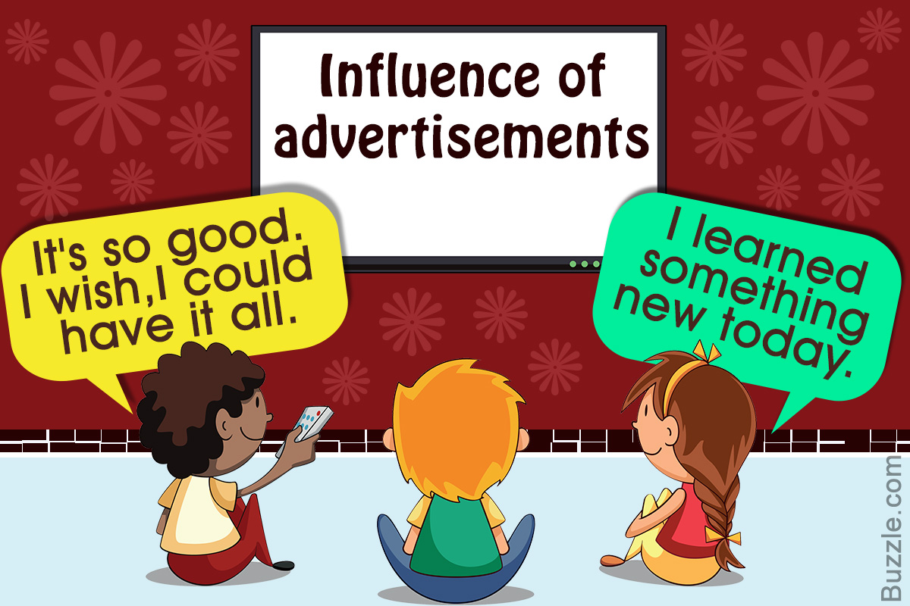

Impact of Advertisement on the Youth
Introduction
Advertisements play a significant role in shaping the minds of young people today. With the rapid growth of technology and the prevalence of media, youth are exposed to a barrage of advertisements in various forms. This web page explores the impact of advertisements on the youth and sheds light on the positive and negative effects they have.
Positive Effects
Advertisements can have several positive effects on the youth:
- Education and Awareness: Advertisements can educate young people about new products, services, and opportunities.
- Career Inspiration: Inspirational advertisements can motivate youth to pursue their dreams and aspirations.
- Social Messages: Advertisements promoting social causes can raise awareness and encourage positive social change among the youth.

Negative Effects
Advertisements can also have negative impacts on the youth:
- Materialistic Values: Advertisements often promote a consumerist culture, leading to materialistic values and a focus on possessions.
- Body Image Issues: Youth, especially young girls, may develop unrealistic body image standards due to advertisements promoting unattainable beauty ideals.
- Peer Pressure: Youth can feel pressured to conform to societal norms and trends depicted in advertisements, affecting their self-esteem and individuality.
Conclusion
"It is crucial to promote critical thinking and media literacy among the youth to help them navigate the impact of advertisements on their lives."
The impact of advertisements on the youth is complex, with both positive and negative effects. By promoting awareness, critical thinking, and media literacy, we can empower young people to make informed choices and mitigate any potential negative impacts.